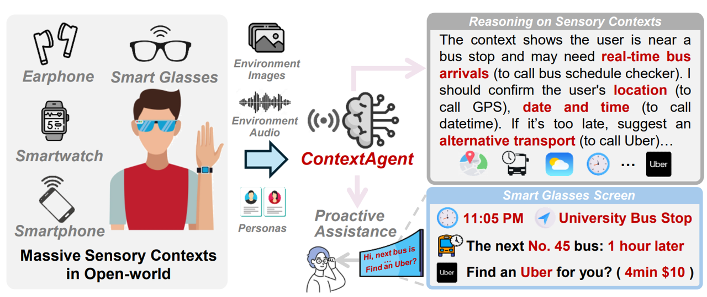
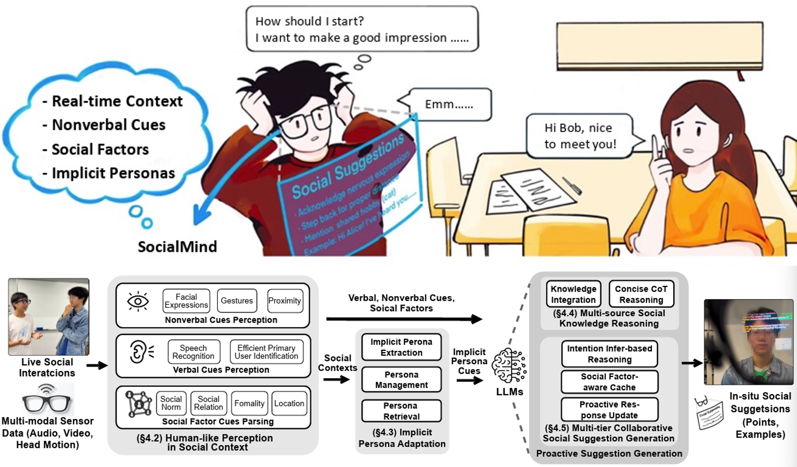
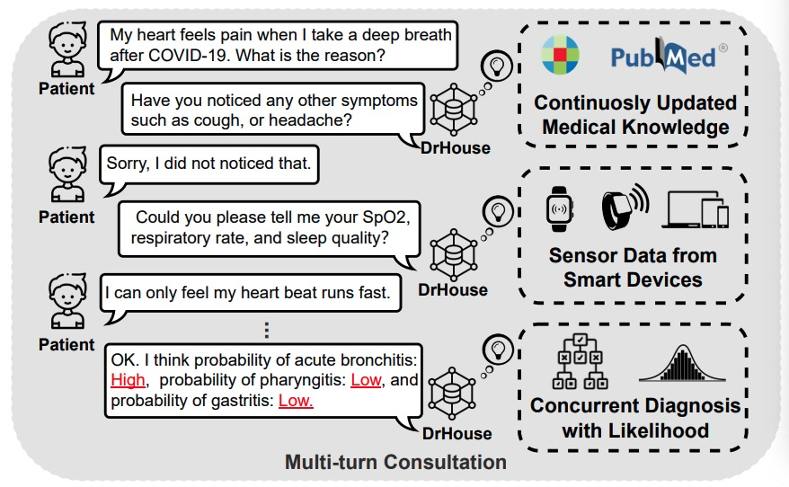
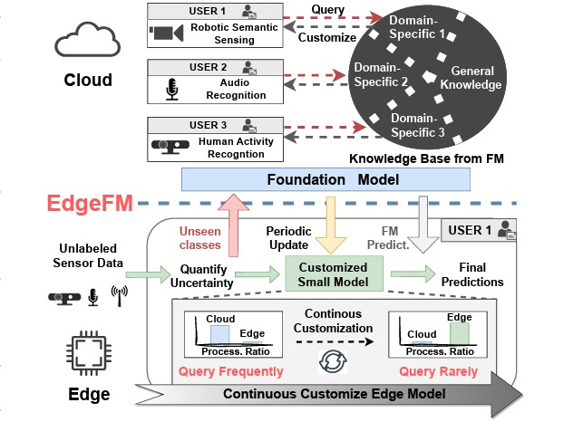
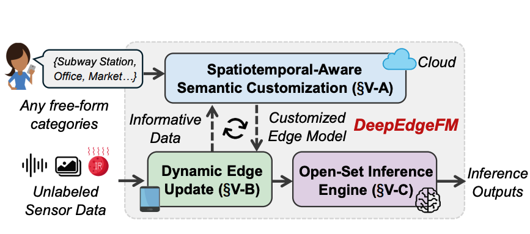
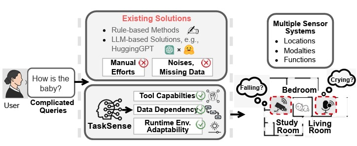

The Chinese University of Hong Kong · AIoT Lab
Email: bfyang [at] link [dot] cuhk [dot] edu [dot] hk
Here is my Curriculum Vitae.
Bufang Yang is a fourth-year Ph.D. student of AIoT Lab, The Chinese University of Hong Kong (CUHK), supervised by Prof. Guoliang Xing and Prof. Zhenyu Yan. Prior to this, he received his Bachelor's degree and Master's degree from Northwestern Polytechnical University (NWPU) and Nanjing University (NJU), respectively. His current research interest mainly lies in proactive LLM agent systems, human-computer interaction, and mobile computing.
Full publication list on Google Scholar. * indicates equal contribution. † indicates corresponding authorship.

--- Harness extensive sensory contexts surrounding humans to enhance the proactivity of LLM agents.

--- An LLM-based proactive AR social assistive system that provides users with in-situ social assistance.

--- Integrate sensor data and up-to-date expert knowledge for LLM-based multi-turn diagnostic reasoning.



AutoSys Workshop @ MobiSys 2026
ACM on Interactive, Mobile, Wearable and Ubiquitous Technologies (IMWUT), Biomedical Signal Processing and Control, IEEE Internet of Things Magazine (IoTM), IEEE Sensors Journal
IEMS5726A/IERG4320: Data Science in Practice, 2023 Fall, 2025 Spring, CUHK
IEMS5727B: Internet of Things and Smart Applications, 2025 Spring, 2026 Spring, CUHK
IERG3840: Web Application Development Project, 2022 Spring, 2023 Spring, CUHK
IERG3080: Information and Software Engineering Practice, 2022 Fall, CUHK
Total pageviews: -